Problems from global hunger to greenhouse gas emissions can be better managed by understanding optimized crop production and wastage given cropland resources. A country can better utilize its land resources to effectively cultivate efficient masses of crops to limit waste.

Cereal CropsIncludes wheat, rice, oats, etc. |

Sugar CropsIncludes sugar beets and canes. |

Starchy RootsIncludes potatoes, yams, etc. |
The area of land coutnries dedicate for crop production can vary based on natural resources and economic/political circumstances at specific time periods. The amount of cropland resources a country has directly determines its crop production levels.